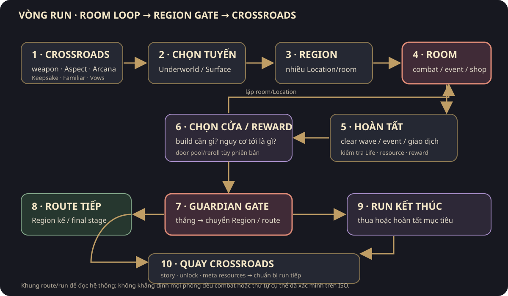
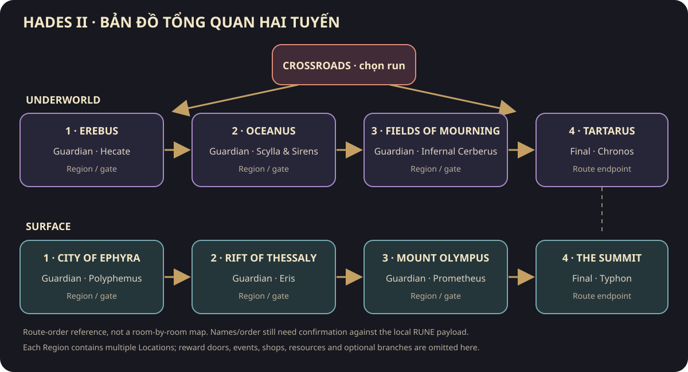
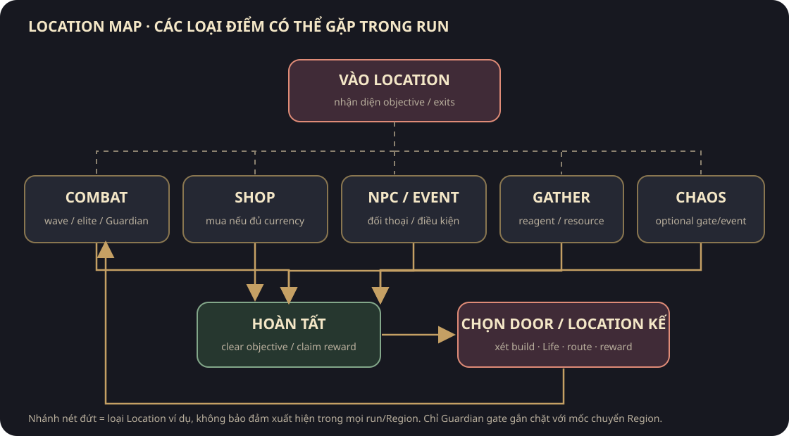
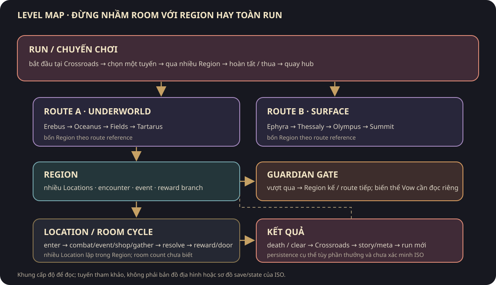
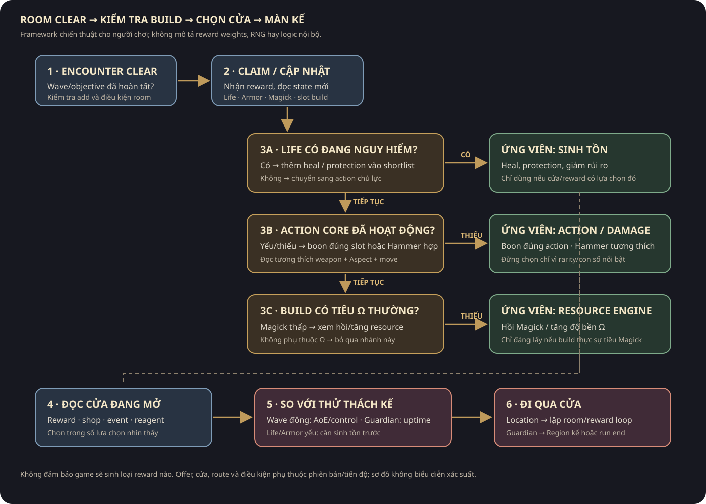
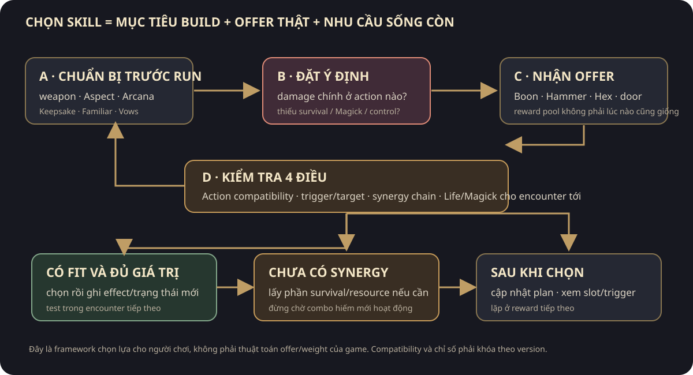
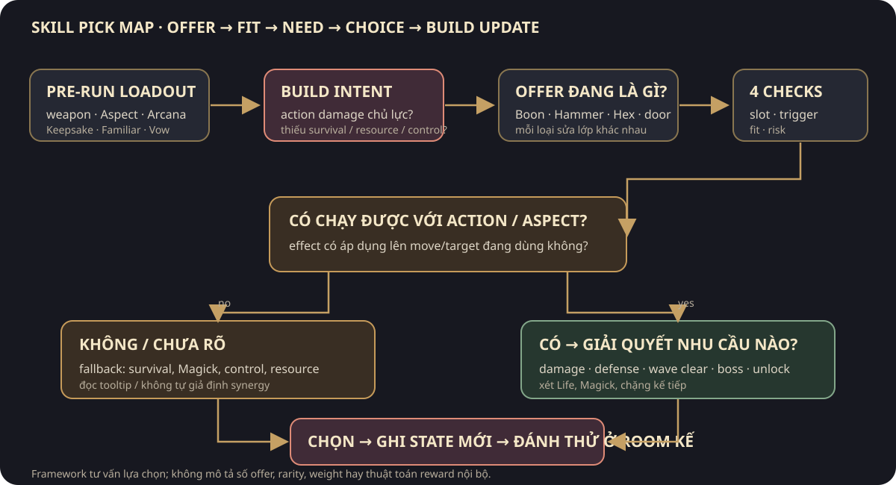

Bản đồ quan hệ hệ thống Hades II
Danh mục chi tiết: Tất cả tính năng và quan hệ · Index offline có hình · Skill/nâng cấp nhân vật · Vũ khí/Aspect.
Luồng run
Crossroads
→ chọn route + weapon/Aspect + Arcana/Grasp + Keepsake + Familiar
→ Region → room encounters + cửa reward + shop/NPC/gathering/Chaos
→ Boon + Hammer + Hex/Path of Stars + resource/survival effects
→ Guardian
├─ thắng → Region kế tiếp → boss cuối route
└─ thua/kết thúc → Crossroads
→ vật liệu/story flags/prophecy/relationship/unlock
→ run kế tiếp hoặc true-ending/epilogue progression

Chi tiết mỗi Location có bảng trạng thái nhập → resolve → reward → chọn cửa → room kế/Guardian gate trong hệ tuyến/phòng. Không gộp Region với một room: một Region gồm nhiều Locations và reward/event branches.




Underworld: Erebus → Oceanus → Fields of Mourning → Tartarus → Chronos. Surface: City of Ephyra → Rift of Thessaly → Mount Olympus → The Summit → Typhon. Các guardian trung gian là Hecate, Scylla and the Sirens, Infernal Cerberus, Polyphemus, Eris, Prometheus. Tên/tuyến là tham khảo Hades II đầy đủ; ISO RUNE chưa được xác nhận cùng hash.
Luồng build chiến đấu
Melinoë base kit: Attack/Special/Cast + Dash/Sprint + Magick
└─ weapon + Aspect định nghĩa moveset Attack/Special/Omega và đặc tính resource
├─ Hammer → sửa move/stat trong run
└─ Boon slot + support/duo/infusion
├─ curse/status → điều kiện synergize/trigger
├─ Magick spent → nạp Hex
└─ damage/defense/healing/reward engine
Arcana → passive rules/layout/Grasp/Awakening
Keepsake + Familiar → effect bổ trợ theo nhân vật/loài
Vow/Fear → điều chỉnh độ khó và reward tier
Hammer effect thuộc run; Aspect/Arcana unlock thuộc meta. Boon compatibility/prerequisite và stacking phải đọc theo từng offer, không gộp mọi lựa chọn thành “bonus chỉ số”.


Quy trình chọn offer chi tiết: skill/build selection. Tóm tắt: trước run chọn weapon/Aspect + passive; trong run chọn core action hiệu lực, bù survival/resource, sau đó mới đầu tư vào synergy cần prerequisite. Cửa route được đánh giá riêng vì reward selection cũng là quyết định build.
Không có một lớp class/level riêng trong sơ đồ hiện biết: skill build được ghép từ weapon/Aspect, Arcana, Boon, Hammer, Hex, Keepsake và Familiar. Xem bảng lớp khả năng + upgrade dài hạn/run-only.
Luồng vật liệu và mở khóa
Tool + gathering point → reagent/seed/fish
→ Crossroads garden / Cauldron / broker / Incantation
→ route, fountain, shop, access, Familiar, convenience hoặc late unlock
Reward/encounter/quest/prophecy → Ashes/Psyche/Moon Dust/Nectar/Bones/etc.
├─ Altar: Arcana unlock/Grasp/rank
├─ Cauldron: world/hub/route/system unlock
├─ Familiar Treat: companion recruitment/bond/rank
└─ gift: Keepsake/relationship/story event
Luồng quan hệ và truyện
run/event/location state
→ NPC available/dialogue priority
→ gift/interaction/bond/prophecy condition
→ scene, reward, unlock, keepsake/relationship state
→ story flag/codex/Fated List
→ ending/epilogue access
Patch 2 (04/2026) bổ sung narrated prophecy conclusions, Forever Gifting, Going Steady và nhiều thoại/visual updates. Đây là thay đổi sau ISO tháng 09/2025.
Lớp lưu và khôi phục
local save ↔ backup/cloud/cross-save (platform-specific) → state của route/meta/story/settings. Không suy ra các run-only effects, pending rewards, interruption recovery hoặc conflict resolution chỉ từ sơ đồ gameplay. Chúng vẫn là unknown cho gói đang rà; xem Save/load.
Mức chắc chắn
- Artifact-local: ISO/PE/resource/byte cục bộ; không thấy hệ gameplay chỉ từ tên string hoặc icon.
- Official: tính năng được Supergiant/Steam mô tả cho mốc bài viết/patch.
- Community reference: catalog hiện hành dùng để mở rộng tên/mục; không thay thế đối chiếu build.
- Inference: các mũi tên trên là mô hình gameplay/readability, không phải call graph.
- Unverified: giá trị số, xác suất, ordering, persistence, edge cases và hành vi chạy trong ISO.
Nguồn và mốc version: sources · version scope · system coverage.